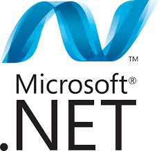

User interface design (UI) or user interface engineering is the design of user interfaces for machines and software, such as computers, home appliances, mobile devices, and other electronic devices, with the focus on maximizing the user experience. The goal of user interface design is to make the user's interaction as simple and efficient as possible, in terms of accomplishing user goals (user-centered design).Good user interface design facilitates finishing the task at hand without drawing unnecessary attention to itself. Graphic design and typography are utilized to support its usability, influencing how the user performs certain interactions and Generally, the goal of user interface design is to produce a user interface which makes
DotNet
NET Framework (pronounced dot net) is a software framework developed by Microsoft that runs primarily on Microsoft Windows. It includes a large class library known as Framework Class Library (FCL) and provides language interoperability (each language can use code written in other languages) across several programming languages. Programs written for .NET Framework execute in a software environment (as contrasted to hardware environment), known as Common Language Runtime (CLR), an application virtual machine that provides services such as security, memory management, and exception handling. FCL and CLR together constitute .NET Framework.
Java
Java is a general-purpose computer programming language that is concurrent, class-based, object-oriented, and specifically designed to have as few implementation dependencies as possible. It is intended to let application developers "write once, run anywhere" (WORA), meaning that compiled Java code can run on all platforms that support Java without the need for recompilation. Java applications are typically compiled to bytecode that can run on any Java virtual machine (JVM) regardless of computer architecture. As of 2015, Java is one of the most popular programming languages in use particularly for client-server web applications, with a reported 9 million developers.[citation needed] Java was originally developed by James Gosling at Sun Microsystems
Data Base
A database management system (DBMS) is a computer software application that interacts with the user, other applications, and the database itself to capture and analyze data. A general-purpose DBMS is designed to allow the definition, creation, querying, update, and administration of databases. Well-known DBMSs include MySQL, PostgreSQL, Microsoft SQL Server, Oracle, Sybase and IBM DB2. A database is not generally portable across different DBMSs, but different DBMS can interoperate by using standards such as SQL and ODBC or JDBC to allow a single application to work with more than one DBMS. Database management systems are often classified according to the
 User interface design (UI) or user interface engineering is the design of user interfaces for machines and software, such as computers, home appliances, mobile devices, and other electronic devices, with the focus on maximizing the user experience. The goal of user interface design is to make the user's interaction as simple and efficient as possible, in terms of accomplishing user goals (user-centered design).Good user interface design facilitates finishing the task at hand without drawing unnecessary attention to itself. Graphic design and typography are utilized to support its usability, influencing how the user performs certain interactions and Generally, the goal of user interface design is to produce a user interface which makes
User interface design (UI) or user interface engineering is the design of user interfaces for machines and software, such as computers, home appliances, mobile devices, and other electronic devices, with the focus on maximizing the user experience. The goal of user interface design is to make the user's interaction as simple and efficient as possible, in terms of accomplishing user goals (user-centered design).Good user interface design facilitates finishing the task at hand without drawing unnecessary attention to itself. Graphic design and typography are utilized to support its usability, influencing how the user performs certain interactions and Generally, the goal of user interface design is to produce a user interface which makes
 Java is a general-purpose computer programming language that is concurrent, class-based, object-oriented, and specifically designed to have as few implementation dependencies as possible. It is intended to let application developers "write once, run anywhere" (WORA), meaning that compiled Java code can run on all platforms that support Java without the need for recompilation. Java applications are typically compiled to bytecode that can run on any Java virtual machine (JVM) regardless of computer architecture. As of 2015, Java is one of the most popular programming languages in use particularly for client-server web applications, with a reported 9 million developers.[citation needed] Java was originally developed by James Gosling at Sun Microsystems
Java is a general-purpose computer programming language that is concurrent, class-based, object-oriented, and specifically designed to have as few implementation dependencies as possible. It is intended to let application developers "write once, run anywhere" (WORA), meaning that compiled Java code can run on all platforms that support Java without the need for recompilation. Java applications are typically compiled to bytecode that can run on any Java virtual machine (JVM) regardless of computer architecture. As of 2015, Java is one of the most popular programming languages in use particularly for client-server web applications, with a reported 9 million developers.[citation needed] Java was originally developed by James Gosling at Sun Microsystems